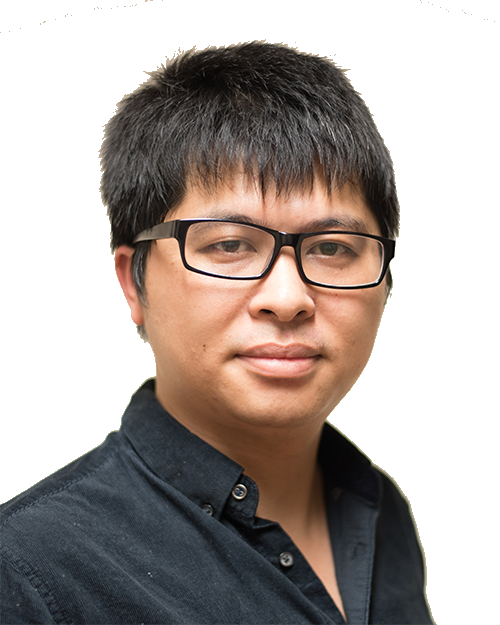

Biography
I am a principal researcher at Huawei, working on multimodal agents. For years I studied how intelligent systems perceive and understand the visual world — across 3D and spatial perception, long-video and egocentric understanding, and human-centric generation. My focus has since shifted to how they remember, reason, and act in it. Today that means multimodal agents for personal devices — egocentric perception, always-on sensing and long-horizon memory — and I lead the interaction-data effort behind them, with GUI agents (phone and computer use) as one current focus. I value shipping as much as publishing: I led the core technology behind Huawei's sign-language digital human, which interpreted the keynote live at the Huawei Developer Conference in two consecutive years and shipped to third-party developers. Research from my team has also shipped on Huawei phones — face recognition, gaze estimation, on-device visual understanding — and into Huawei Cloud’s MetaStudio.
I obtained my Ph.D. from The Chinese University of Hong Kong in 2018, and earlier received my B.Eng. and M.S. degrees from Xidian University and the University of Chinese Academy of Sciences in 2011 and 2014, respectively.
Selected Projects & Impact
Research
Multimodal Agents for Personal Devices
Role: Initiated and planned the research agenda.
Established the research direction on multimodal agents that perceive and act through real devices — starting with AI glasses and wearable hardware, now spanning egocentric perception and intent understanding, always-on streaming video sensing, episodic memory and spatial reasoning, and budget-aware long-video understanding. Our team placed second in the HD-EPIC VQA Challenge 2025.
Product
Sign-Language Digital Human
Role: Led the core technology.
Huawei's real-time sign-language avatar. It interpreted Richard Yu's keynote live at the Huawei Developer Conference in two consecutive years — debuting at HDC 2021 and, at HDC 2022, running 3+ hours of continuous translation for an audience of 10M+ online and on-site. Shipped to third-party developers as HMS Core's SignPal Kit, covering 20,000+ Chinese signs and 26 facial expressions.
Research
3D/4D Reconstruction & Novel-View Synthesis
Role: Led the research direction.
Work across feed-forward 3D Gaussian Splatting, video-diffusion 4D reconstruction, monocular depth and geometry, and multi-view harmonization — from benchmarks to fast, in-the-wild scene capture. The on-device reconstruction prototype we built seeded REMY, a HarmonyOS 3D spatial-memory app announced at HDC 2025; our monocular-depth model won the ECCV 2022 RVC challenge.
Research
Conversational & Interactive Digital Humans
Role: Led the research direction.
The digital-human direction I led at Huawei — spanning speech- and audio-driven co-speech gesture generation, human-motion video generation, 2D/3D avatars and talking humans, and conversational 3D virtual humans — the research behind the sign-language digital human above. Our entry won the Reproducibility Award at the GENEA Challenge 2023. Algorithms from this line were delivered by my team into Huawei Cloud's MetaStudio, whose digital-human generation and driving services were announced at HDC.Cloud 2023.
{kind=link}
iCo3DMotion-Video SurveyCo-Speech Gesture VideoQPGestureDiffuseStyleGesture
Selected Publications
Grouped by research direction, most recent first within each group. Full list on Google Scholar.
Multimodal Agents & Egocentric AI 6 papers
EMNLP
Weitong Cai, Hang Zhang, Yukai Huang, Yiqiao Xie, Shan Gao, Jiankang Deng, Songcen Xu, Jifei Song, Zhensong Zhang
EMNLP 2026 Main
EMNLP
CapMem: A Benchmark for Caption-Based Episodic Memory in Egocentric Video
Dingli Liang, Yiqiao Xie, Yukai Huang, Zhaokai Wang, Weitong Cai, Guangwen Feng, Jifei Song, Zhensong Zhang, Hang Zhang
EMNLP 2026 Industry Track
CVPR
Color When It Counts: Grayscale-Guided Online Triggering for Always-On Streaming Video Sensing
Weitong Cai, Hang Zhang, Yukai Huang, Shitong Sun, Jiankang Deng, Songcen Xu, Jifei Song, Zhensong Zhang
CVPR 2026 Website
CVPR
Map2Thought: Explicit 3D Spatial Reasoning via Metric Cognitive Maps
Xiangjun Gao, Zhensong Zhang, Dave Zhenyu Chen, Songcen Xu, Long Quan, Eduardo Pérez-Pellitero, Youngkyoon Jang
CVPR Findings 2026
WWW
Egocentric Co-Pilot: Web-Native Smart-Glasses Agents for Assistive Egocentric AI
Sicheng Yang, Yukai Huang, Weitong Cai, Shitong Sun, Fengyi Fang, You He, Yiqiao Xie, Jiankang Deng, Hang Zhang, Jifei Song, Zhensong Zhang
WWW 2026
AAAI
Plug-and-Play Clarifier: A Zero-Shot Multimodal Framework for Egocentric Intent Disambiguation
Sicheng Yang, Yukai Huang, Weitong Cai, Shitong Sun, You He, Jiankang Deng, Hang Zhang, Jifei Song, Zhensong Zhang
AAAI 2026
3D/4D Reconstruction & Novel-View Synthesis 9 papers
SIGGRAPH Asia
WildAnySplat: Feed-Forward 3D Gaussian Splatting in the Wild
Richard Shaw, Arthur Moreau, Athanasios Papaioannou, Thomas Tanay, Zhensong Zhang, Eduardo Pérez-Pellitero
SIGGRAPH Asia 2026
ECCV
Video Generative Models as Geometry Learner
Haosen Yang, Jifei Song, Zhensong Zhang, Xiatian Zhu, Jiankang Deng
ECCV 2026
CVPR
GRVS: a Generalizable and Recurrent Approach to Monocular Dynamic View Synthesis
Thomas Tanay, Mohammed Brahimi, Michal Nazarczuk, Qingwen Zhang, Sibi Catley-Chandar, Arthur Moreau, Zhensong Zhang, Eduardo Pérez-Pellitero
CVPR Findings 2026 Website
CVPR
Charge: A Comprehensive Novel View Synthesis Benchmark and Dataset to Bind Them All
Michal Nazarczuk, Thomas Tanay, Arthur Moreau, Zhensong Zhang, Eduardo Pérez-Pellitero
CVPR 2026
CVPR
Off The Grid: Detection of Primitives for Feed-Forward 3D Gaussian Splatting
Arthur Moreau, Richard Shaw, Michal Nazarczuk, Jisu Shin, Thomas Tanay, Zhensong Zhang, Songcen Xu, Eduardo Pérez-Pellitero
CVPR 2026 Website
ICLR
CHROMA: Consistent Harmonization of Multi-View Appearance via Bilateral Grid Prediction
Jisu Shin, Richard Shaw, Seunghyun Shin, Zhensong Zhang, Hae-Gon Jeon, Eduardo Pérez-Pellitero
ICLR 2026
NeurIPS
ViDAR: Video Diffusion-Aware 4D Reconstruction From Monocular Inputs
Michal Nazarczuk, Sibi Catley-Chandar, Thomas Tanay, Zhensong Zhang, Gregory Slabaugh, Eduardo Pérez-Pellitero
NeurIPS 2025
NeurIPS
HyunJun Jung, Weihang Li, Shun-Cheng Wu, William Bittner, Nikolas Brasch, Jifei Song, Eduardo Pérez-Pellitero, Zhensong Zhang, Arthur Moreau, Nassir Navab, Benjamin Busam
NeurIPS 2024
IJCV
Mochu Xiang, Yuchao Dai, Feiyu Zhang, Jiawei Shi, Xinyu Tian, Zhensong Zhang
IJCV, 2024 · Winner, ECCV 2022 Robust Vision Challenge
Generative Vision 4 papers
ECCV
LatSearch: Latent Reward-Guided Search for Faster Inference-Time Scaling in Video Diffusion
Zengqun Zhao, Ziquan Liu, Yu Cao, Shaogang Gong, Zhensong Zhang, Jifei Song, Jiankang Deng, Ioannis Patras
ECCV 2026
ICML
Yu Cao, Ziquan Liu, Zhensong Zhang, Jiankang Deng, Shaogang Gong, Jifei Song
ICML 2026
CVPR
Diffusion-Based Makeup Transfer with Facial Region-Aware Makeup Features
Zheng Gao, Debin Meng, Yunqi Miao, Zhensong Zhang, Songcen Xu, Ioannis Patras, Jifei Song
CVPR 2026
ICCV
Frequency-Guided Diffusion for Training-Free Text-Driven Image Translation
Zheng Gao, Jifei Song, Zhensong Zhang, Jiankang Deng, Ioannis Patras
ICCV 2025
Digital Humans & Human Motion 8 papers
IJCV
ICo3D: An Interactive Conversational 3D Virtual Human
Richard Shaw, Youngkyoon Jang, Athanasios Papaioannou, Arthur Moreau, Helisa Dhamo, Zhensong Zhang, Eduardo Pérez-Pellitero
IJCV Website
3DV
SCENIC: Scene-aware Semantic Navigation with Instruction-guided Control
Xiaohan Zhang, Sebastian Starke, Vladimir Guzov, Zhensong Zhang, Eduardo Pérez-Pellitero, Gerard Pons-Moll
3DV 2026
TPAMI
Human Motion Video Generation: A Survey
Haiwei Xue, Xiangyang Luo, Zhanghao Hu, Xin Zhang, Xunzhi Xiang, Yuqin Dai, Jianzhuang Liu, Zhensong Zhang, Minglei Li, Jian Yang, Fei Ma, Zhiyong Wu, Changpeng Yang, Zonghong Dai, Fei Richard Yu
IEEE Trans. PAMI, 2025 Website
CVPR
Co-Speech Gesture Video Generation via Motion-Decoupled Diffusion Model
Xu He, Qiaochu Huang, Zhensong Zhang, Zhiwei Lin, Zhiyong Wu, Sicheng Yang, Minglei Li, Zhiyi Chen, Songcen Xu, Xiaofei Wu
CVPR 2024
ICMI
The DiffuseStyleGesture+ Entry to the GENEA Challenge 2023
Sicheng Yang, Haiwei Xue, Zhensong Zhang, Minglei Li, Zhiyong Wu, Xiaofei Wu, Songcen Xu, Zonghong Dai
ICMI 2023 · Reproducibility Award, GENEA Challenge 2023 Award
CVPR
Sicheng Yang, Zhiyong Wu, Minglei Li, Zhensong Zhang, Lei Hao, Weihong Bao, Haolin Zhuang
CVPR 2023
IJCAI
DiffuseStyleGesture: Stylized Audio-Driven Co-Speech Gesture Generation with Diffusion Models
Sicheng Yang, Zhiyong Wu, Minglei Li, Zhensong Zhang, Lei Hao, Weihong Bao, Ming Cheng, Long Xiao
IJCAI 2023
ECCV
CLIFF: Carrying Location Information in Full Frames into Human Pose and Shape Estimation
Zhihao Li, Jianzhuang Liu, Zhensong Zhang, Songcen Xu, Youliang Yan
ECCV 2022 (Oral)
Recent News
Honors & Awards
- President’s Award (individual), Central Research Institute, Huawei 2012 Laboratories, 2022
- Second place, HD-EPIC VQA Challenges 2025
- Reproducibility Award, GENEA Challenge 2023
- Winner, Monocular Depth Estimation, Robust Vision Challenge (RVC), ECCV 2022